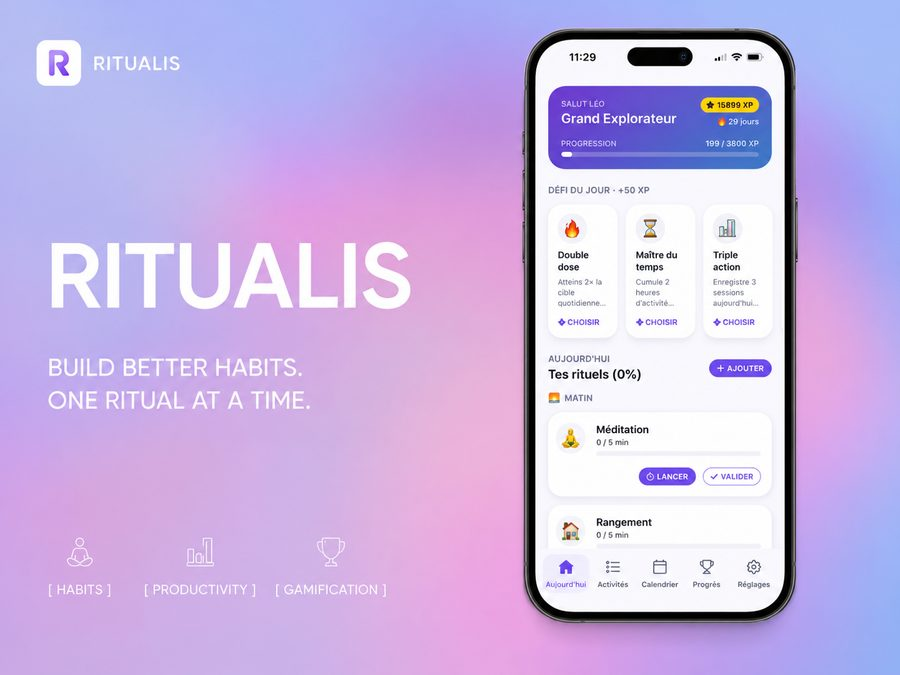

მოტივაცია ზეწოლისგან არ იბადება — ის პროგრესიდან მოდის.

რამდენიმე კვირის წინ ერთი მნიშვნელოვანი რამ გავაცნობიერე.
მინდოდა ცხოვრების რამდენიმე მიმართულებით წინსვლა: უფრო ეფექტურად მუშაობა, მეტი კითხვა, სპორტით დაკავება, ინგლისურის სწავლა.
მაგრამ, როგორც ბევრ ადამიანს, მეც დიდი მოტივაციით ვიწყებდი — შემდეგ კი ვჩერდებოდი.
ვცადე ჩვევების მართვის არაერთი აპლიკაცია. ზოგი ზედმეტად რთული იყო. ზოგი კი თავს დამნაშავედ მაგრძნობინებდა, თუ ერთი დღეც გამომრჩებოდა.
ამიტომ გადავწყვიტე შემექმნა ჩემი საკუთარი სისტემა. მარტივი სისტემა. ზეწოლის გარეშე. დაწესებული საათებისა და მკაცრი გრაფიკის გარეშე. უბრალოდ გზა, რომელიც საშუალებას მაძლევს ყოველდღიურად დავინახო ჩემი პროგრესი.
დღეს ზუსტად ვხედავ, სად მიდის ჩემი დრო: რამდენ საათს ვუთმობ კონცენტრირებულ მუშაობას, კითხვას, სწავლას, ან ფიზიკურ აქტივობას.
ამ პროექტს Ritualis დავარქვი.
პროდუქტიულობის აპლიკაციების უმეტესობა მუდმივად გახსენებს იმას, რაც არ გაგიკეთებია. მე კი მინდოდა შემექმნა აპლიკაცია, რომელიც გაჩვენებს ყველაფერს, რაც უკვე გააკეთე.
რადგან საბოლოოდ, მოტივაცია ზეწოლისგან არ იბადება. ის პროგრესიდან მოდის. კონცენტრაციის ყოველი წუთიდან. ყოველი დასრულებული სესიიდან. ყოველი პატარა გამარჯვებიდან.
Ritualis არ არის იმისთვის, რომ განგსაჯოს. ის არსებობს იმისთვის, რომ გაჩვენოს, რამდენად შორს შეგიძლია წასვლა.
გადააქციე შენი დრო ხილულ პროგრესად.